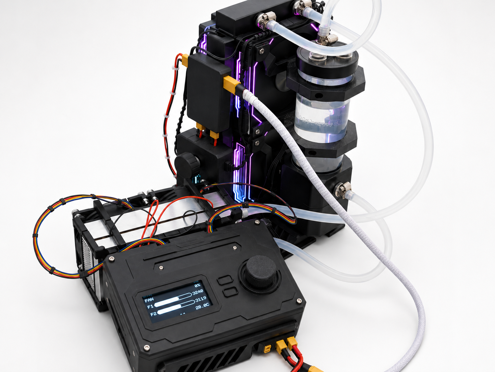
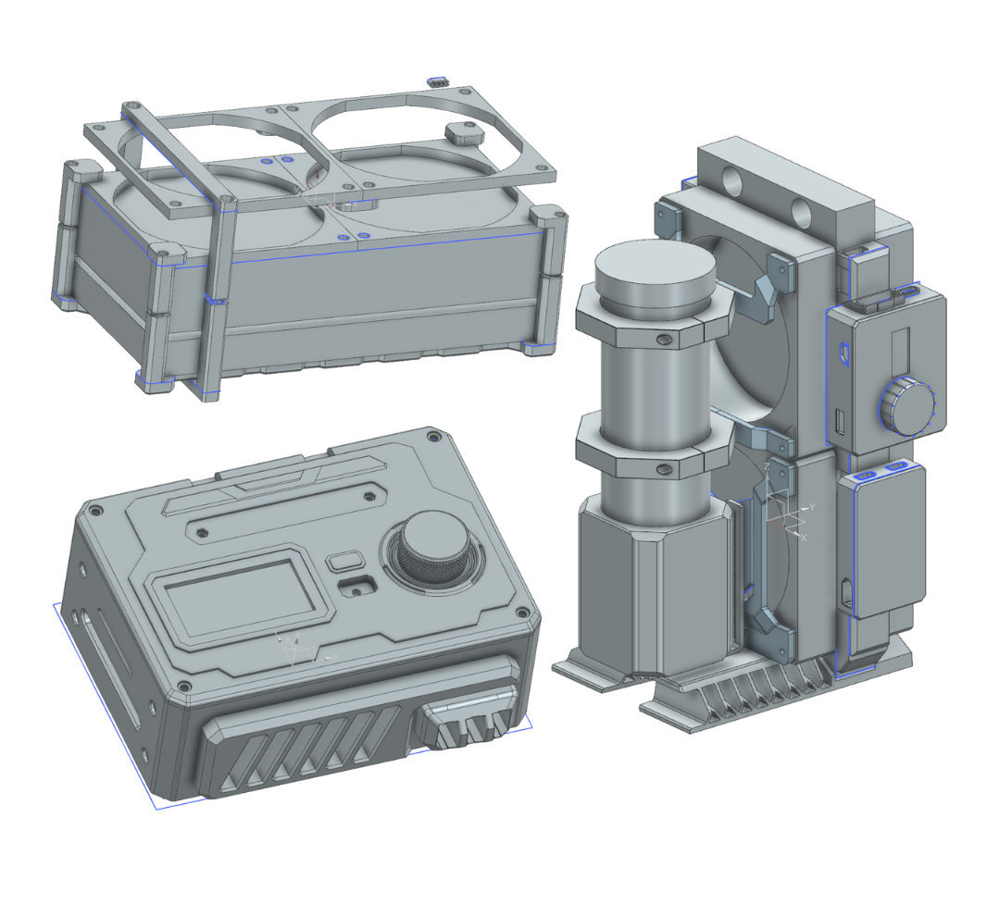
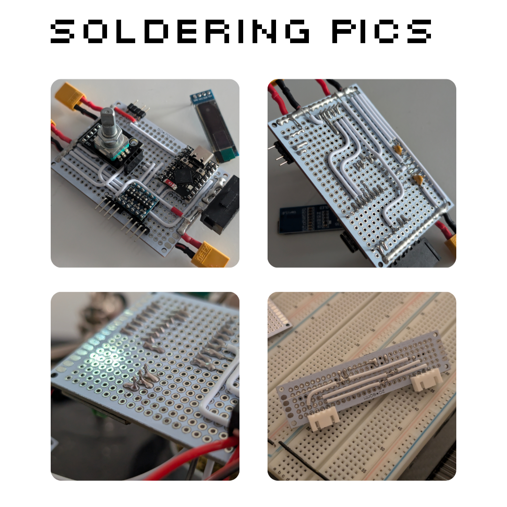
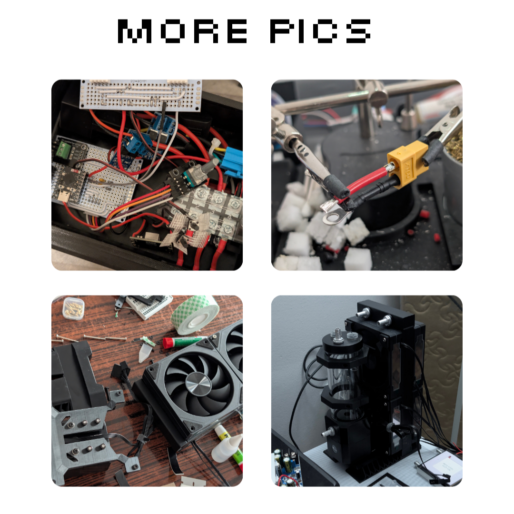
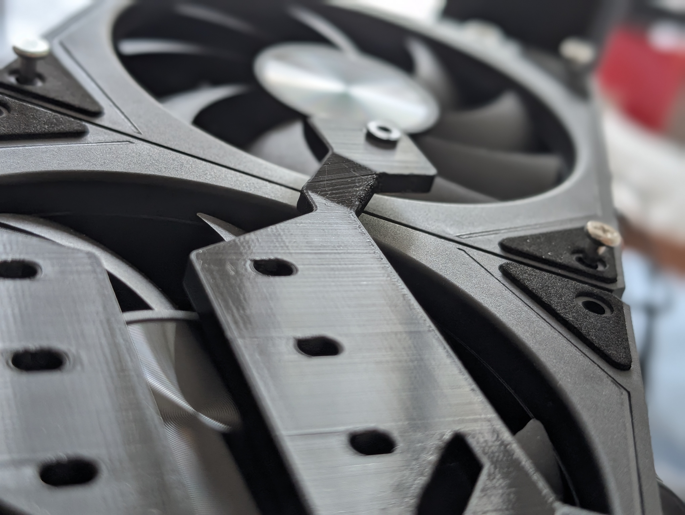

Peltier System

Solo Project. 5" Peltier System. Most dorms on my campus don't provide air conditioning or controllable heaters. Sleeping in a 90+ degree ambient temperature room isn't a good feeling. And portable AC units aren't allowed in dorms. Thus, why not try solving both problems using Peltier Modules?
Design Process
Peltier modules create a temperature difference between the hot and cold sides. Cooling the hot side more results in a chiller cool side. Inspired by modern PCs, water cooling can be more effective at cooling the hot surface. Copper is a very good thermal conductor, but much more expensive than Aluminum. Consequences of using aluminum are the lack of fittings made of Aluminum. These days, most fittings are made of nickel and brass, both of which can lead to severe galvanic corrosion when in contact with Aluminum and water. Two TEC-12715 were used for better cooling, but came at a cost of much higher power requirements. 4 Fans were used in a push/pull configuration to better cool the radiator. Two Fans were used on the cold side to blow cold air. Power isn't an issue because we students don't pay the electricity bills on campus.
Specifications
- Duration: May 2026 - July 2026
- Material: PETG + PLA
- Cost: ~ $250
Outcome
HIGHLY inefficient and ineffective. Electricity Bill Multiplier. If used as a heater, it's highly effective. Rather than cooling a room, this system is more adequate for cooling a small insulated box such as a mini fridge. This project has made me realize that I should start learning PCB Design.

CAD
Custom mounts, brackets, and enclosures were modeled in CAD to better fit this project's needs. I simply modeled a rough draft of an actual part, such as the D5 pump and radiator, measured lengths using my Walmart $10 caliper, and designed custom parts around them. Other than the hexagonal reservoir bracket, everything else was an original idea. As someone who had a decent amount of experience in 3D Modeling (Note: CAD and Artistic 3D Modeling aren't the same), aesthetics were heavily valued. There were multiple ways for me to connect covers to their bases. One way was to simply print a low-tolerance wall and use friction tape to ensure a tight fit. Another was to use neodymium magnets. And finally, the most common approach was simply screwing a bolt down. Rather than using self-tapping screws, I superglued nuts or pressed heat inserts onto the base.
Soldering
Because this was my first experience in perfboard soldering, it may not be up to standards. Breadboard wiring techniques taught to me by my on-campus job at Embedded Systems Laboratories easily helped me with wiring and soldering on perfboards. The solder I've been using was the HengTianMei 60/40 solder from Amazon. The Mechanics solder is nothing compared to this solder. The iron used is the Pinecil V2. The majority of these parts were bought from AliExpress.


Assembling
The max amperage of this system was around 32A. At such high amperage and with no knowledge of PCBs, parts were bound to get huge. Here's how the system works: There are two TB2504s. One on top for positive. Bottom for negative. All terminals on the bottom TB are bridged with copper. For the top, only three of the terminals are bridged while the last one is left alone. That way, I can use a 4-pin relay to switch power to the bridged positive terminals via a 5-pin LED switch, with the relay being powered by the non-bridged positive terminal connected with an inline fuse. The LED switch was for aesthetic purposes. Everything else is controlled by the ESP32S3 Supermini, and values can be manually adjusted through the rotary encoder. Crimping wire lugs (Ring & Fork terminals) were also heavily utilized. PC Fans were used on the pump side for aesthetic purposes. As you all know, RGB increases performance...
